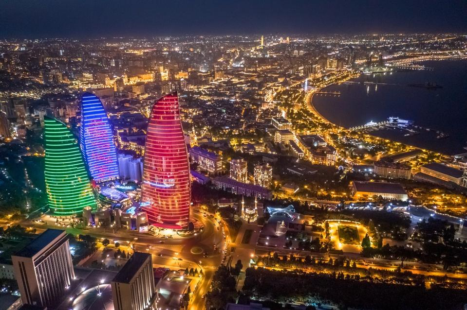
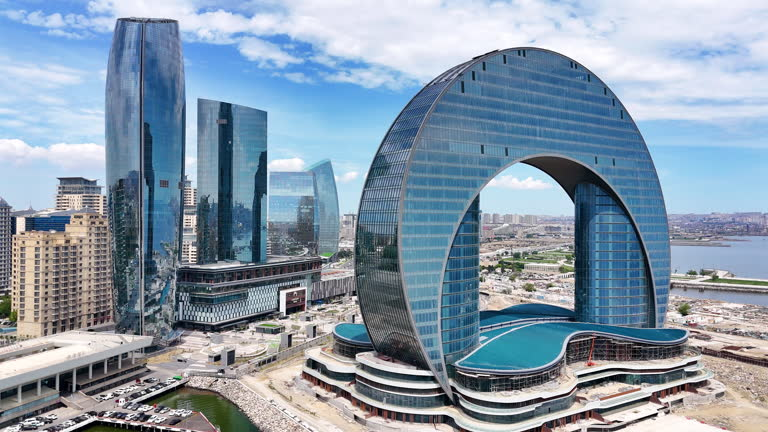
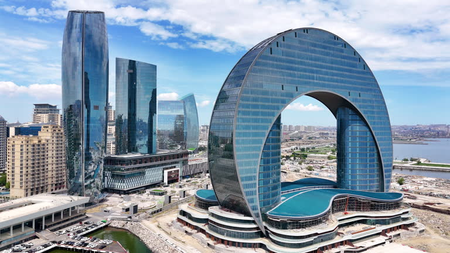
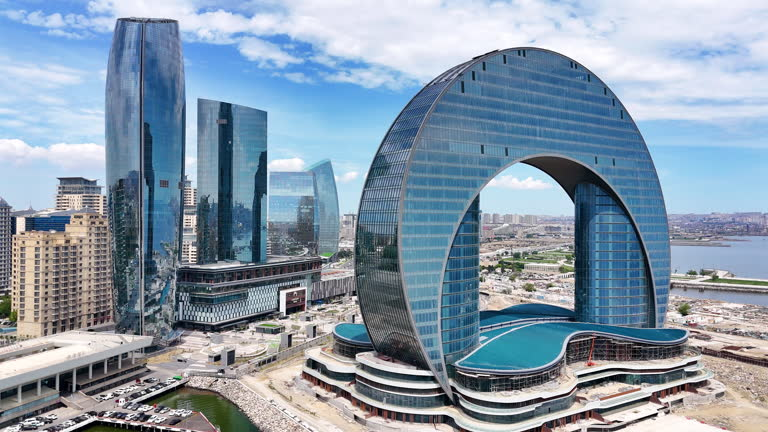
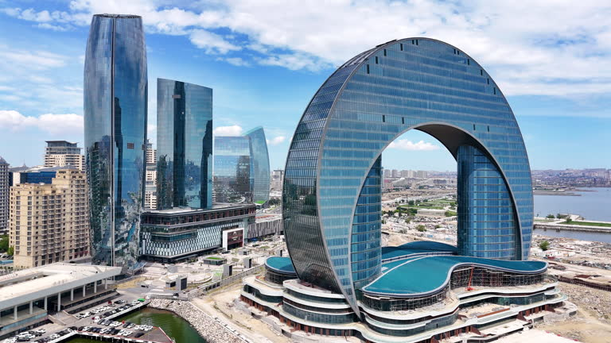

Baku

 



Baku! Azerbaijan’s most popular city and tourist attraction, known for it's cool buildngs and architecture.
Another cool part about Azerbaijan is their attractions, there's so many cool and unique pieces of architecture that you will find here. Look around!!

Baku! Azerbaijan’s most popular city and tourist attraction, known for it's cool buildngs and architecture.
Sheki! Known for being where the former historic silk roads were built!
Sumqayit! Known as the "City of Youth" for being the youngest city in Azerbaijan, yet still having the 2nd largest populaition behind Baku.